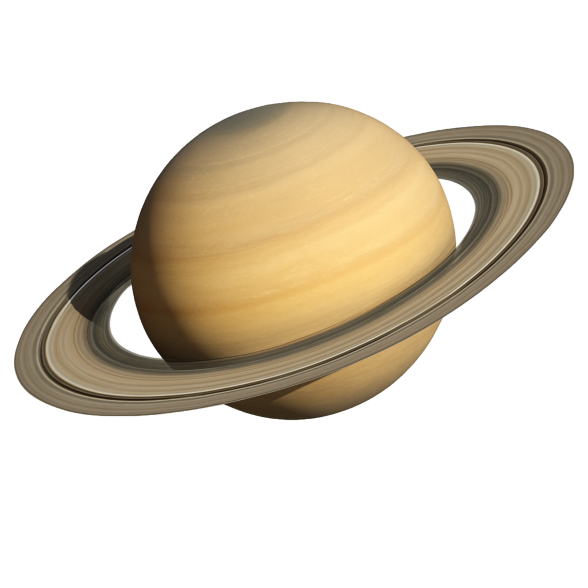
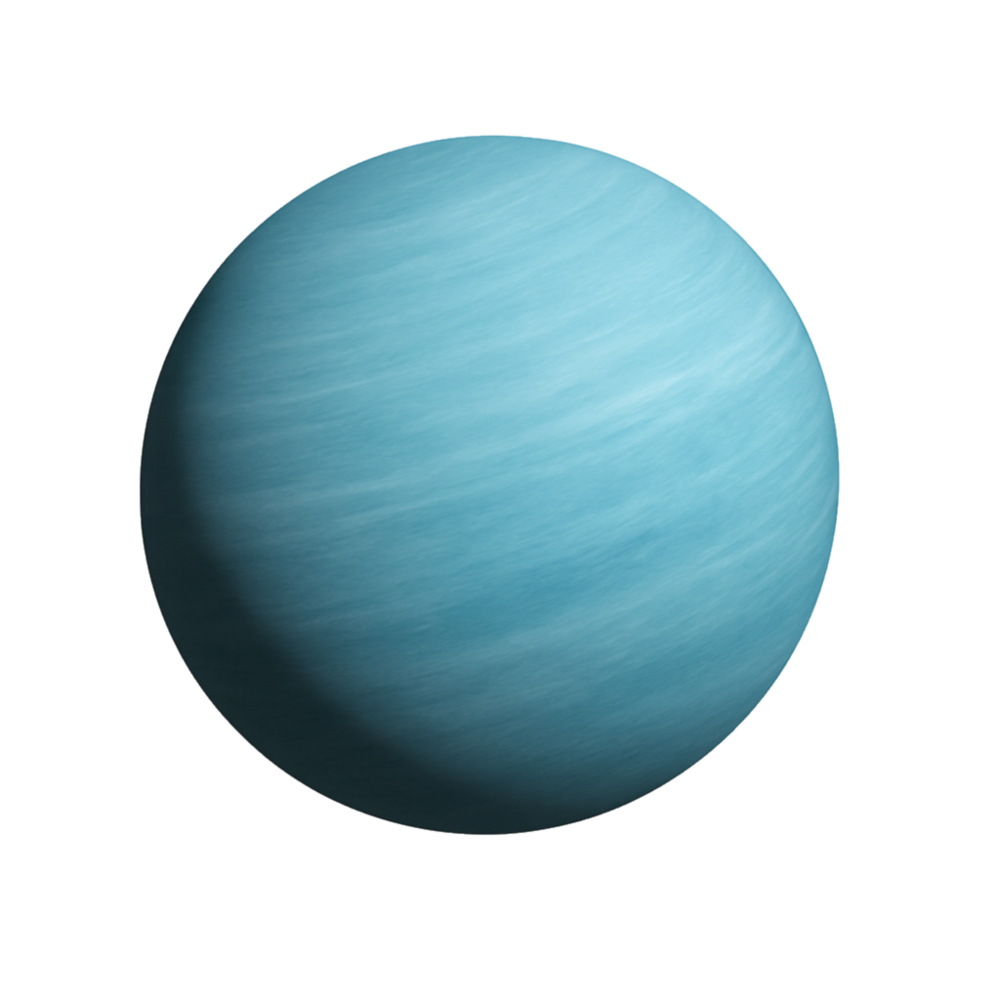

Sun
The central star of our planetary system, a yellow dwarf with a surface temperature of around 5778 K (5505°C) and a radius of 695,700 km. It contains more than 99.9% of the total mass of the Solar System, most of which consists of fuel for nuclear fusion reactions – hydrogen and helium.
Mercury
The smallest planet and also the closest to the Sun. It orbits the star faster than any other planet, which is why the Romans named it after their god – the swift-footed messenger.
Venus
Named after the Roman goddess of love and beauty, the counterpart of the Greek Aphrodite. In ancient times, Venus was considered a planet with two identities, observed in the sky as either the Evening Star or the Morning Star.
Earth

Earth, our cosmic home. The only known planet with oceans of liquid water, an oxygen-rich atmosphere, and life.
Mars
The fourth planet from the Sun and the second smallest in the Solar System after Mercury. Named after the Roman god of war, it is also known as the Red Planet due to its coloration, which results from a high concentration of iron oxides on its surface.
Jupiter
Jupiter, the gas giant, is the largest planet in the Solar System. It was named after the king of the gods in Roman mythology, the equivalent of the Greek god Zeus.
Saturn

Saturn, another gas giant with a magnificent ring system, is the sixth planet from the Sun and the second largest in the Solar System. Saturn was the Roman counterpart of the ancient Greek ruler of the Titans – Cronus.
Uranus

The largest of the ice-giant planets and the third-largest planet in the Solar System. The bluish-green color of the planet is a result of the presence of methane and ammonia in its atmosphere.
Neptune
The most distant planet in the Solar System, the fourth-largest by size, and the first to be discovered based on mathematical calculations that revealed the existence of a massive object gravitationally disturbing Uranus's orbit.